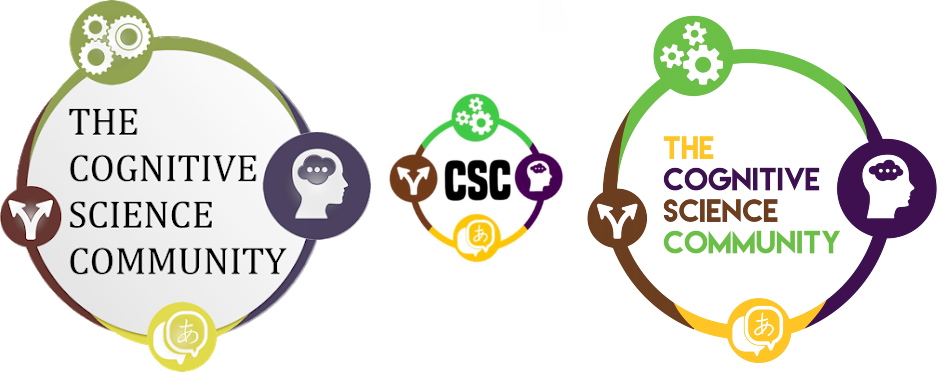
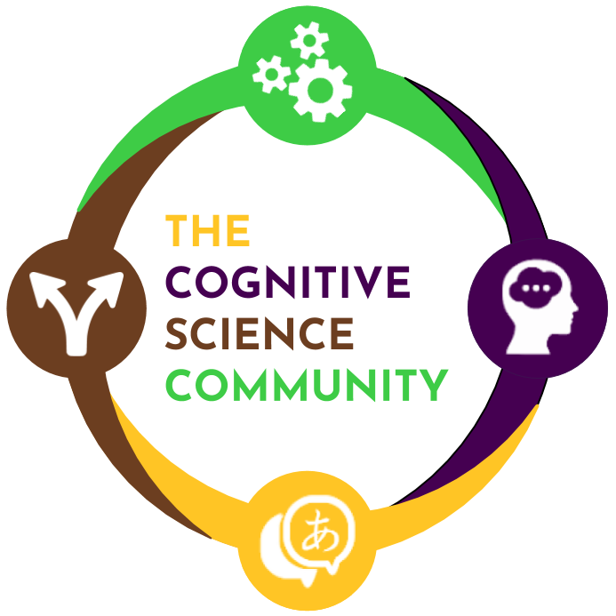
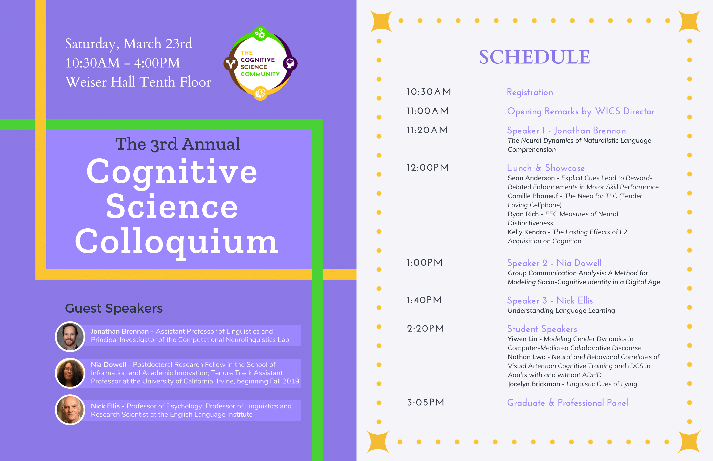
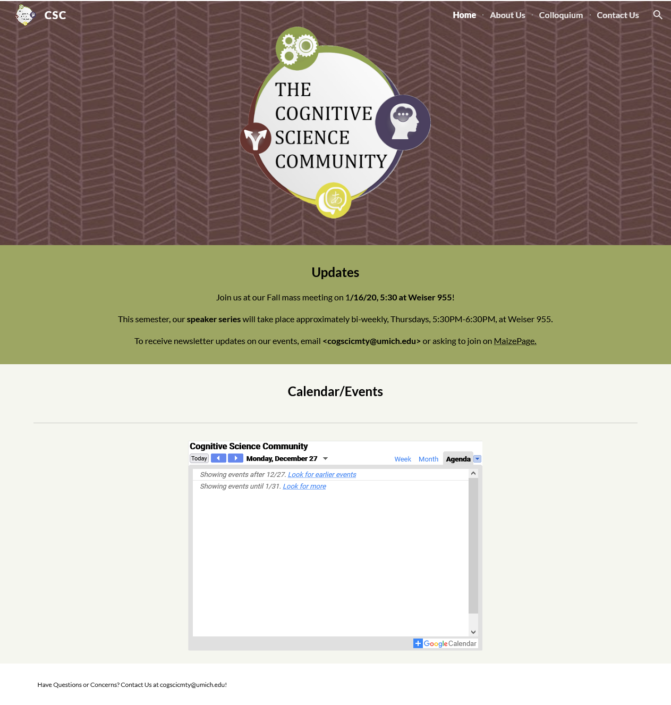
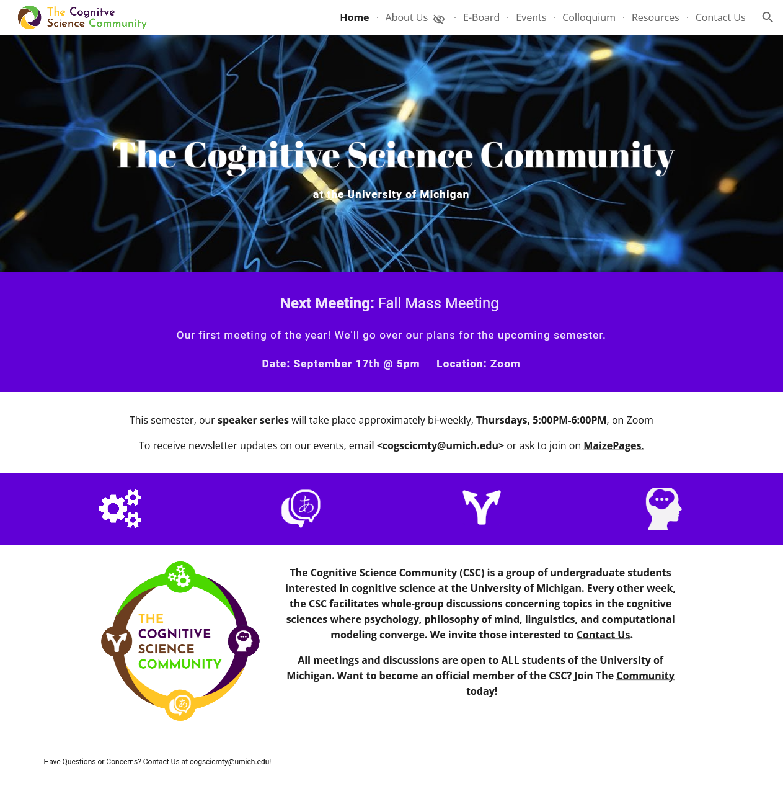

My sophomore year, I was on the Cognitive Science Community club's colloquium planning team and was delegated the role of creating all visual materials, including flyers and agenda. I was also allowed the chance to update our club's logo. These were the different iterations of the logo our club had undergone through its tenure at the time:
I wanted to maintain our club's identity by maintaing the traditional four-color color scheme, however opted for more vibrant shades. This iteration also feaured an all-important transparent background. Next, I chose to create a more visually balanced design that could be used more flexibily in future uses. For example, my symmetric design was used to create stickers that we gave out for free at the colloquium. The design is shown below:
The agenda of the colloquium, featuring my updated logo is also shown here:
I became a member of the club's excecutive board during COVID and overhauled our current website. The website at the time was little used, however due to online classes, we anticipated much more site activity.
Our old site was maintained on Google Sites as was the URL, so I kept it. It also offers a lot of simplicity in editing which is great for future editors. In addition to a complete visually overhaul complete with a new banner logo. I also created an events tab to create an archive past club events for future members to get an idea of what we do and a resources tab for people to learn more about what cognitive science is and available oppurtunities for those interested in the field.
